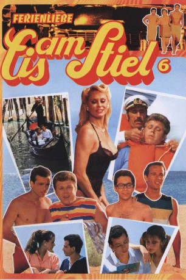
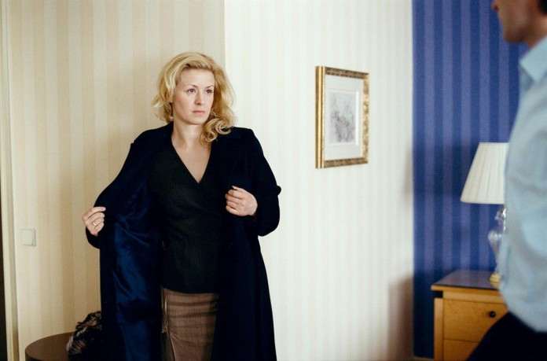
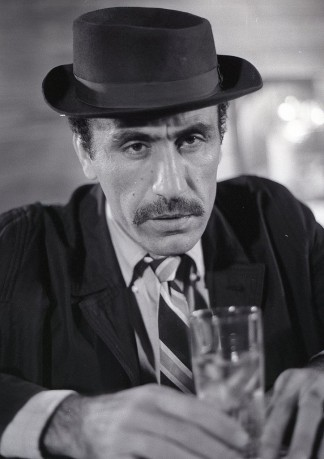

#7990 Eis am Stiel 6 - Ferienliebe
Alternativ: Up Your Anchor (Englischer Titel)
 
 IMDB-Wertung: 4.4 / 10
IMDB-Wertung: 4.4 / 10  Metascore: 0
Metascore: 0 
Kaum hat Johnny ein neues Bett samt kuscheligem Inhalt erobert, erscheint auch schon der aufgebrachte Vater der Süßen und fuchtelt wild mit dem Messer herum. Johnny, vor die Alternative gestellt, die Ehre der Kleinen durch Heirat zu retten oder als Gulasch zu enden, wählt den dritten Weg, die Flucht. Zusammen mit Freund Benny heuert er ausgerechnet auf einem Kreuzfahrtschiff an. Klar, daß das Ziel Venedig heißt - aber nicht Ruhe. Denn auf hoher See kann man den Girls erst recht nicht entfliehen. Und für die Leichtmatrosen der Liebe beginnen stürmische Zeiten...
Jahr: 1985
Dauer: 81 Minuten
FSK: 16
Land: Israel Studio: Scotia International FilmverleihTonspuren:
Untertitel:
Auflösung: 1080p (1872x1080) Größe: 5765 MB
Genre: Komödie
Regisseur: Dan Wolman
Drehbuch: Michael Conroy
Soundtrack:
Darsteller:
 Yftach Katzur als Benzi / Benji
Yftach Katzur als Benzi / Benji- Zachi Noy als Yudale / Hughie
- Dvora Kedar als Benji's Mother Sonja
- Yehuda Efroni als Captain - Sherry's Father
- Alexander Allerson als Count von Alexandrow
- Tikva Mor als
-  Petra Morzé als Sherry
- Shula Revach als Elli, Sherry's Mother
-  Joseph Shiloach als Georgiyan
- Jonathan Sagall als Bobby - Momo (archive footage) (uncredited)
- Ophelia Shtruhl als Stella (archive footage) (uncredited)
- Ronen Shilon als
- Alexandra Kaster als
- Itzak Atzmon als
- Lori Bennet als
- Renato Faduan als
- Rina Feingold als
- Bea Fiedler als Countess von Alexandrow
- Avi Hadash als Froyke - Froggy
- Goldi Heller als
- Jan Kampi als
- Zvika Laskov als
- David Leshem als
- Tzipi Lim als
- Svetlana Mazovskaya als
- Boris Moskovich als
- Sabine Mucha als Nymphomaniac on Boat
- Lorenzo Panuelle als
- Roni Setter als
- Itzik Sharvit als
- Adar Yosef als
Datei: X:\7+mehr(A-Z)\Eis am Stiel\Eis am Stiel 6 - Ferienliebe (1985, FSK16, 1872x1080).mkv seit 09.01.2018
Festplatte: HD Collection-7+mehr(A-Z)+Person
 Es gibt insgesamt 11 Filme in der Gruppe '7+mehr(A-Z)\Eis am Stiel'
Es gibt insgesamt 11 Filme in der Gruppe '7+mehr(A-Z)\Eis am Stiel'